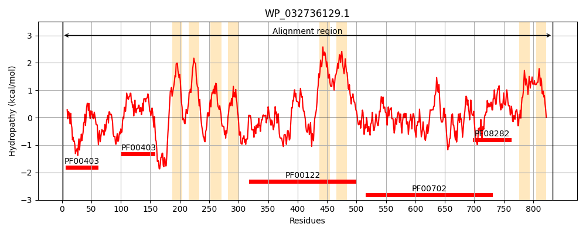
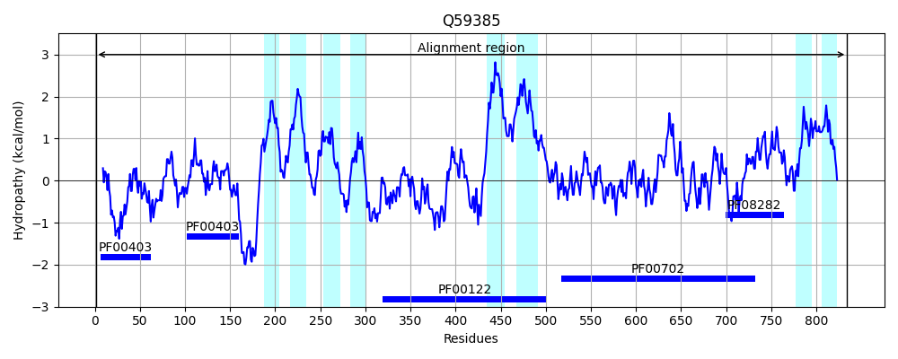
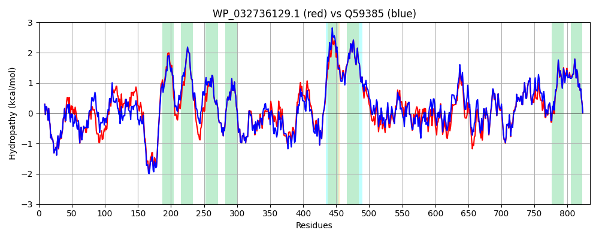

Hit Accession: Q59385
Hit TCID: 3.A.3.5.5
Hit Description: gnl|BL_ORD_ID|14238 gnl|TC-DB|Q59385|3.A.3.5.5 PROBABLE COPPER-TRANSPORTING ATPASE (EC 3.6.3.4) - Escherichia coli.
Mach Len: 834
e:0.000000
Query TMS Count : 8
Hit TMS Count: 8
TMS-Overlap Score: 7.150000
Predicted Substrates:CHEBI:49551;copper(1+), CHEBI:49468;silver(1+)
BLAST Alignment:
Score: 3692 , Bit scores: 1426 bits, E-value: 0.0e+00, Alignment length: 834, Percentage identity: 88
Query: 1 MSNTIDLTLDGLSCGHCVKRVKESLEQRPDVEQAEVTLTEAHVTGSASAQALIDTVKQAGYGAELSHPKAKPLAESSIPSEALTAATPELPAAH-DEDDSQQLLINGMSCASCVSRVQNALAAVPGVSQARVNLAERTALVMGSASAAELVQAVEKAGYGAEAIEDDLQRRERQQETAIATMKRFRWQAIVALLVGVPVMVWGMIGDNMMVSDDNRSLWLVIGLVTLAVMVFAGGHFYRSAWKSLKNGTATMDTLVALGTGVAWLYSMSVNLWPQWFPMEARHLYYEASAMIIGLINLGHMLEARARQRSSKALEKLLDLTPPSARVVTPEGEKDLPLAEVQAGMTLRLTTGDRVPVDGVISQGEAWFDEAMLTGEPVPQQKGDGDAIHAGTVVQDGSVLFTASAVGSQTTLARIIRMVRQAQSSKPEIGQLADKISAVFVPAVVAIALISAAIWYVFGPAPQIVYTLVIATTVLIIACPCALGLATPMSIISGVGRAAEYGVLVRDADALQRASELDTLVFDKTGTLTEGKPQVVTVKTFSGIDEATAVRLAAALEQGSSHPLARAILDKAADSSLPEVSGFRTLRGLGVSGEAEGHRLLLGNQALLNEQHIATGDIESEMTAQASRGATPVLLAVDGQAAALFAIRDPLREDSVDALARLHRQGYRLVMLTGDNPTTAKAIAKEAGIDEVIAGVLPDGKADAIKRLQSQGHKVAMVGDGINDAPALAQADVGIAMGGGSDVAIETAAITLMRHSLHGVADALAISKATLRNMKQNLLGAFVYNSLGIPIAAGILWPLTGTLLNPVVAGAAMALSSITVVSNANRLLRFKPKE 833
MS TIDLTLDGLSCGHCVKRVKESLEQRPDVEQA+V++TEAHVTG+ASA+ LI+T+KQAGY A +SHPKAKPLAESSIPSEALTA + LPAA D+DDSQQLL++GMSCASCV+RVQNAL +VPGV+QARVNLAERTALVMGSAS +LVQAVEKAGYGAEAIEDD +RRERQQETA+ATMKRFRWQAIVAL VG+PVMVWGMIGDNMMV+ DNRSLWLVIGL+TLAVMVFAGGHFYRSAWKSL NG ATMDTLVALGTGVAWLYSMSVNLWPQWFPMEARHLYYEASAMIIGLINLGHMLEARARQRSSKALEKLLDLTPP+AR+VT EGEK +PLAEVQ GM LRLTTGDRVPVDG I+QGEAW DEAMLTGEP+PQQKG+GD++HAGTVVQDGSVLF ASAVGS TTL+RIIRMVRQAQSSKPEIGQLADKISAVFVP VV IAL+SAAIWY FGPAPQIVYTLVIATTVLIIACPCALGLATPMSIISGVGRAAE+GVLVRDADALQRAS LDT+VFDKTGTLTEGKPQVV VKTF+ +DEA A+RLAAALEQGSSHPLARAILDKA D LP+V+GFRTLRGLGVSGEAEGH LLLGNQALLNEQ + T IE+E+TAQAS+GATPVLLAVDG+A AL A+RDPLR DSV AL RLH+ GYRLVMLTGDNPTTA AIAKEAGIDEVIAGVLPDGKA+AIK LQS+G +VAMVGDGINDAPALAQADVGIAMGGGSDVAIETAAITLMRHSL GVADALAIS+ATL NMKQNLLGAF+YNS+GIP+AAGILWP TGTLLNPVVAGAAMALSSITVVSNANRLLRFKPKE
Sbjct: 1 MSQTIDLTLDGLSCGHCVKRVKESLEQRPDVEQADVSITEAHVTGTASAEQLIETIKQAGYDASVSHPKAKPLAESSIPSEALTAVSEALPAATADDDDSQQLLLSGMSCASCVTRVQNALQSVPGVTQARVNLAERTALVMGSASPQDLVQAVEKAGYGAEAIEDDAKRRERQQETAVATMKRFRWQAIVALAVGIPVMVWGMIGDNMMVTADNRSLWLVIGLITLAVMVFAGGHFYRSAWKSLLNGAATMDTLVALGTGVAWLYSMSVNLWPQWFPMEARHLYYEASAMIIGLINLGHMLEARARQRSSKALEKLLDLTPPTARLVTDEGEKSVPLAEVQPGMLLRLTTGDRVPVDGEITQGEAWLDEAMLTGEPIPQQKGEGDSVHAGTVVQDGSVLFRASAVGSHTTLSRIIRMVRQAQSSKPEIGQLADKISAVFVPVVVVIALVSAAIWYFFGPAPQIVYTLVIATTVLIIACPCALGLATPMSIISGVGRAAEFGVLVRDADALQRASTLDTVVFDKTGTLTEGKPQVVAVKTFADVDEAQALRLAAALEQGSSHPLARAILDKAGDMQLPQVNGFRTLRGLGVSGEAEGHALLLGNQALLNEQQVGTKAIEAEITAQASQGATPVLLAVDGKAVALLAVRDPLRSDSVAALQRLHKAGYRLVMLTGDNPTTANAIAKEAGIDEVIAGVLPDGKAEAIKHLQSEGRQVAMVGDGINDAPALAQADVGIAMGGGSDVAIETAAITLMRHSLMGVADALAISRATLHNMKQNLLGAFIYNSIGIPVAAGILWPFTGTLLNPVVAGAAMALSSITVVSNANRLLRFKPKE 834 | Protein Hydropathy Plots: |
|---|
|  |  |
Pairwise Alignment-Hydropathy Plot:
|
|---|
|  |